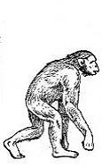
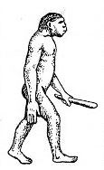
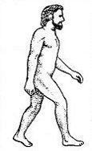

Домашнее задание №1
- Обезьяноподобное животное - Дриопитек
- Человекообразная обезьяна - Австралопитек
- Человек прямоходящий
- Человек разумный
Антропоиды |
Гоминиды - прямоходящие приматы |
||||
|
Dryopithecus |
Australopithecus |
Homo erectus |
Homo sapiens |
||
|
Обезьяноподобное животное; возраст 18-9 млн лет |
Человекообразная обезьяна; возраст около 5 млн лет |
Человек прямоходящий; возраст 2 млн - 500 тыс. лет |
Человек разумный; возраст 500-30 тыс.лет |
Человек разумный; возраст 40 тыс.лет |
Человек разумный; возраст 10 тыс.лет |
| Дриопитек | Австралопитек |
Древнейший человек (питекантроп, синантроп, гейдельбергский человек и др.) |
Древний человек неандерталец |
Новые люди |
|
|  |  |

|

|

|
 |
|
Размеры небольшие, лазающие и ходящие в полувыпрямленном положении |
Рост 120-150 см; масса 20-50 кг; прямохождение; рука - хватательный орган |
Невысокий рост, массивный костяк |
Невысокий рост (155-165 см); массивный костяк, коренастый, походка согнутая |
Рост до 180 см; физический тип современного человека |
|
Обезьяноподобное животное - Дриопитеки
(Dryopithecus, от греч. δρυός — дерево и πίθηκος — обезьяна) — род вымерших человекообразных обезьян, известный по ряду останков, найденных в Восточной Африке и Евразии. Жили во времена миоцена, примерно 12—9 миллионов лет назад. Вероятно, в этот род входит общий предок горилл, шимпанзе и людей. Гиббоновые (гиббоны, хулоки, номаскусы и сиаманги), как и орангутаны, согласно молекулярным данным, отделились ранее. Нижняя челюсть с зубами и плечевая кость дриопитека (Dryopithecus fontani) были найдены во Франции в 1856 году учёным Ларте. Некоторые части больших коренных зубов являются характерными для дриопитеков и гоминид в целом. Позднее останки дриопитеков были найдены в Венгрии (рудапитек), Испании (испанопитек) и в Китае.
Человекообразная обезьяна - Австралопитек
(лат. Australopithecus от лат. australis «южный» + др.-греч. πίθηκος «обезьяна») — род ископаемых высших приматов, обладавших признаками прямохождения и антропоидными чертами в строении черепа, чей хронологический период (как рода) определяется от 4,2 до 1,8 млн лет назад. Также понятие «австралопитеки» часто используется шире и распространяется на большую эволюционную группу гоминидов — австралопитецины[en][2], включающую в себя, помимо рода Australopithecus, представителей ещё пяти родов: Sahelanthropus, Orrorin, Ardipithecus, Kenyanthropus и Paranthropus[3], либо вместе с парантропами выделяют в подтрибу австралопитецина (англ.)русск. в трибе гоминини (Hominini)[4].
Человек прямоходящий
(лат. Homo erectus) или человек выпрямленный (устар. архантропы), — ископаемый вид людей, который рассматривают как непосредственного предка современных людей. Произошёл в ходе эволюции от Homo habilis, через Homo ergaster[1][2]. Видовая принадлежность оспаривается разными исследователями[1]. Исследование генома X-хромосомы в 2008 году привело к выводу, что азиатский вид Homo erectus вполне мог скрещиваться с Homo sapiens и быть предком современных людей по смешанным линиям (не прямой мужской и не прямой женской)[3][4].
Человек разумный
(лат. Homo sapiens[К 1]; преимущественно лат. Homo sapiens sapiens[К 2]) — вид рода Люди (Homo) из семейства гоминид в отряде приматов. В начале верхнего палеолита, около 40 тысяч лет назад, его ареал уже охватывает почти всю Землю (кроме Американского континента, который был заселён позже, примерно 15 тысяч лет назад)[4][5]. От остальных современных человекообразных, помимо ряда анатомических особенностей, отличается относительно высоким уровнем развития материальной и нематериальной культуры (включая изготовление и использование орудий труда), способностью к членораздельной речи и крайне развитому абстрактному мышлению [К 3]. Человек как биологический вид является предметом исследования физической антропологии. На сегодняшний день не осталось ни одной стороны или свойства человека как особи, индивида или члена человеческой популяции, которые бы не были охвачены специальными научными исследованиями. Основные дисциплины, изучающие человека и человечество:
- Антропология
- Биология человека
- Генеалогия
- Геногеография
- История
- Лингвистика
- Медицина
- Психология
- Культурология
- Социология
- Этнография
- Этология